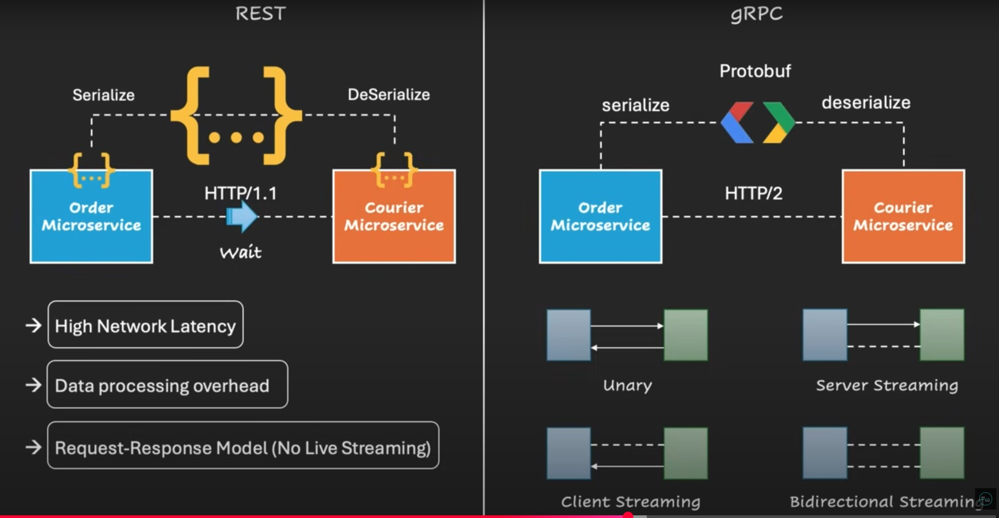
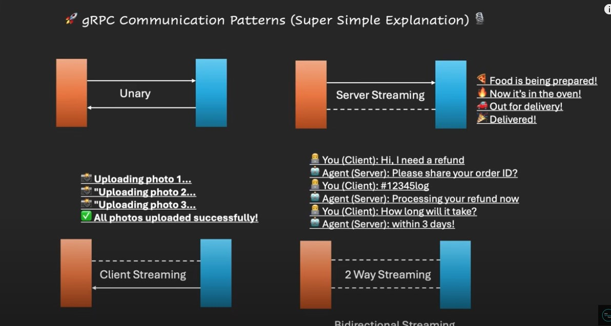

Understanding gRPC
A modern approach to building efficient, high-performance APIs.
Main Concepts
Protocol Buffers (Protobuf)
gRPC uses Protobuf for data serialization. It's a binary, language-agnostic format that is significantly smaller and faster to serialize and deserialize than text-based formats like JSON or XML. This reduces network overhead and improves performance.
HTTP/2
Unlike REST, which primarily uses HTTP/1.1, gRPC is built on HTTP/2. This enables features like multiplexing multiple requests over a single TCP connection, header compression, and server push, which all contribute to lower latency and better efficiency.
Service Definition
gRPC uses a `.proto` file to define the service interface and the structure of the data (messages). This contract-first approach ensures strong typing and enables the automatic generation of client and server stubs in various programming languages.
gRPC vs. REST: A Quick Look
This table provides a simple overview of the key differences between gRPC and REST APIs.

gRPC vs. REST: A Visual Flow
This diagram illustrates the internal workings of REST and gRPC when two services communicate.

1. Data Serialization
The diagram shows REST APIs use text-based formats like JSON. Think of this as sending a full letter that needs to be read and understood. gRPC uses Protobuf, which is a compressed, binary format. This is like sending a tightly packed box of parts with a blueprint, which is much faster to ship and assemble.
2. Communication Protocol
REST uses HTTP/1.1, which waits for one request to finish before starting another. gRPC uses HTTP/2, which allows multiple conversations to happen at the same time over a single connection, making it more efficient and reducing latency.
gRPC Communication Patterns
This image illustrates the four different ways a client and server can talk to each other using gRPC.

- Unary: A simple request and response, just like a traditional REST call. You send one message, and the server sends one back.
- Server Streaming: The client sends one request, and the server responds with a continuous stream of messages. This is great for things like real-time stock updates or a long-running process where the server sends status updates.
- Client Streaming: The client sends a series of messages as a stream to the server, and the server sends back a single response after it's received everything. An example would be uploading a large file in small chunks.
- Bidirectional Streaming: Both the client and the server can send a stream of messages to each other at the same time. This is perfect for real-time applications like chat apps or live collaboration tools.